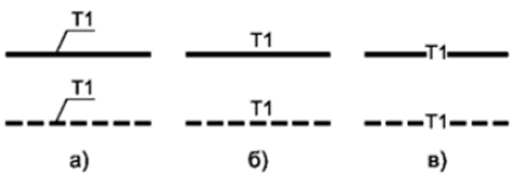

Оформление ПД и РД по ГОСТ Р 21.101-2020

При проектировании ВК правильное оформление документации - залог ее эффективности, экономии времени и отсутствия ошибок в процессе строительства. ГОСТ 21.101-2020 устанавливает требования к структуре, содержанию и оформлению проектных документов; для систем ВК есть свои особенности, нюансы и моменты, которые обязательно надо учитывать.
ГОСТ 21.601-2011: Специальный стандарт для систем ВК. Конкретизирует правила выполнения рабочей документации внутренних систем водоснабжения и канализации, включая состав чертежей и условные обозначения.
СП 30.13330.2020: Главный свод правил, регламентирующий проектирование внутренних систем ВК.
ГОСТ Р 21.620-2023: Правила выполнения проектной документации внутренних систем и наружных сетей канализации
Общие принципы оформления документации ВК по ГОСТ 21.101-2020
| Пункт | Ключевые моменты | Что учесть в ВК |
| Структура документации | Четкая последовательность разделов, единая нумерация, содержание, ведомости. | Водопроводные и канализационные схемы, спецификации оборудования, пояснительные. |
| Обозначения и условные знаки | Использование ГОСТовых стандартов, единая цветовая гамма и шрифты. | Обязательно применять стандартные условные обозначения для труб, фитингов и арматуры. |
| Формат и оформление | Формат А4 или А3, шрифт Times New Roman 14 pt, межстрочный интервал 1.5. | В схематике - соблюдение масштабов и условных обозначений, не перегружайте. |
| Использование таблиц | Таблицы по материалам, диаметрам, расходам, уклонам, объёмам, рабочих характеристиках. | Включайте только актуальные и подтвержденные расчётами данные. |
| Листы и титульники | Единый стиль оформления, титульный лист, листы с законодательными ссылками. | Обязательно указывать номера листов, даты, согласование. |
Особенности оформления ВК документации в соответствии с ГОСТ
Обозначение систем и элементов
Каждый чертеж или документ имеет основную надпись (штамп) установленной формы, содержащую данные об объекте, разработчике, стадии и др. Основные разделы, формируемые специалистом ВК, обозначаются шифром, который принимают по ГОСТ 21.205 и указывают на чертежах и схемах в соответствии с ГОСТ 21.206, например:

ВК – общее обозначение раздела «Водоснабжение и канализация».
- В1 – холодное водоснабжение.
- Т3, Т4 – горячее водоснабжение и циркуляция.
- К1 – внутренняя бытовая канализация
Важно, если система канализации или конденсатопровода напорная, то к буквенно-цифровому обозначению добавляется прописная буква «Н». Например, К1Н – канализация бытовая напорная.
В схемах ВК использовать условные знаки – стрелки для направления, условные обозначения для фитингов, приборов.
| Тип документа | В составе ПД (Стадия «П») | В составе РД (Стадия «Р») |
| Текстовая часть | описание принятых технических и иных решений, пояснения, ссылки на нормативные документы и/или техническую документацию, применяемые при подготовке проектной документации, и результаты расчетов, обосновывающие принятые решения.
| Представлена на листе общих данных и в качестве примечаний на чертежах |
| Планы | Общие планы с трассировкой магистралей, стояками, основным оборудованием. | Детализированные планы всех помещений с полными размерами, всеми элементами (включая крепления), высотными отметками. |
| Схемы | Принципиальные (аксонометрические) схемы систем с расчетными расходами и диаметрами. | Рабочие аксонометрические схемы со всеми отметками и марками оборудования по спецификациям. |
| Узлы | Отсутствуют или схематичны. | Обязательны. Деталировочные чертежи (проходы через конструкции, обвязка насосов, типовые крепления). |
| Спецификации | Ведомости основного оборудования. | Полные спецификации на каждый лист и сводные, включая материалы, арматуру, крепеж. |
Состав проектной документации Системы водоснабжения и системы водоотведения приведен в п. 17 и 18 ПП РФ №87. Рабочую документацию могут подразделять отдельно на комплекты «Система водоснабжения» и «Система водоотведения», ее состав зависит от Задания на проектирование и примерно включает в себя:
- лист с общими данными;
- рабочие чертежи, предназначенные для производства строительно-монтажных работ (планы, разрезы и схемы) систем и установок;
- спецификацию оборудования, изделий и материалов.
В спецификациях – четкое указание:
- диаметр трубы (мм или дюйм),
- материал (предварительно согласованный по спецификации),
- длина,
- расход,
- показатели из гидравлики (скорость, потери).
Расчетные таблицы и ведомости
- Документ должен содержать ведомости расхода и спецификации оборудования.
- Ведомость расчётов расхода (гидравлический расчет) - включает расходные показатели по каждому сегменту системы: входные данные - диаметр, уклон, длина, скорости; итоговые показатели - давления, потери.
Особенность ВК: обязательно указывайте примечания об учете гидравлических потерь, допустимых скоростях и расчетных давлениях.
Техническое описание (ТЗ)
- В разделе «Обоснования» указывайте нормативные ссылки, расчёты, пояснения по выбору материалов, акустики, компенсаторов.
- Обязательно должна быть таблица «Технические характеристики оборудования» (предмет заказа, параметры, стандарты).
Нюансы оформления разделов: что важно для ВК
Чертежи в составе Проектной документации (ПД)
Графическая часть ПД по ВК должна давать общее представление о системе.
- Планы этажей (подвалов, тех. этажей): Показывают трассировку магистральных трубопроводов, расположение стояков, водомерных узлов, вводов, канализационных выпусков, основных коллекторов. Условные обозначения, привязки к осям здания.
- Принципиальные (расчетные) схемы систем:
- Аксонометрическая схема системы водоснабжения: Показывает всю систему (В1, Т3, Т4) в изометрии, наглядно отображает взаимосвязь элементов, зонирование, места установки запорной и регулирующей арматуры, регуляторов давления, насосов. Обязательно наносятся расчетные расходы, диаметры, отметки.
-Аксонометрическая схема системы канализации: Отображает все стояки, выпуски, трассировку коллекторов, места установки ревизий, прочисток, обратных клапанов. Указываются диаметры, уклоны, отметки.
- Схемы (чертежи) принципиальные систем: Для сложных узлов (насосные станции, вводные узлы, ИТП) — упрощенные схемы, показывающие технологическую последовательность оборудования.
Чертежи в составе Рабочей документации (РД)
РД содержит все чертежи ПД, но детализированные, а также дополнительный комплект.
Рабочие планы: Планы всех помещений, где проходят трубопроводы ВК, с полной информацией:
- Точная трассировка всех трубопроводов (магистральных, разводящих, подводок к приборам).
- Все размеры: привязки к стенам/осям, длины участков, расстояния между осями труб.
- Места установки всех элементов: сантехприборов, арматуры (краны, клапаны, редукторы), креплений (хомутов с указанием типов), опор.
- Отметки чистых полов и высотные отметки прокладки труб.
Деталировочные чертежи (узлы):
- Обвязка насосных агрегатов.
- Узлы прохода трубопроводов через строительные конструкции (стены, перекрытия, фундаменты) с указанием гильз, уплотнений.
- Установка водомерных узлов, регуляторов давления.
- Типовые крепления трубопроводов к конструкциям.
- Схемы (аксонометрические) рабочие: Детализированные, с нанесением всех размеров, отметок, уклонов, указанием марок элементов по спецификациям.
- Ведомость (таблица) расстановки креплений: Тип крепления, его характеристика, место установки (маркировка на плане), количество.
| Раздел документации | Что обязательно учесть для ВК |
| Общие сведения | Обозначение системы, масштабы, условные знаки, обозначение систем ВК (водопровод, канализация, циркуляция). |
| Обоснование проектных решений | Использование расчетных формул, ГОСТов, подтверждение выбранных диаметров, уклонов, материалов. |
| Графические материалы | План, разрез, схематические схемы, аксонометрия, спецификации. Условные обозначения коротко на листе 1-2, ссылка на ГОСТ. |
| Технические решения | Выбор оборудования (насосы, клапаны, фильтры), параметры, монтажные размеры. |
| Расчеты и ведомости | Расчет расхода, скорости, потерь; ведомости длин труб, материалов. |
| Технологические карты | Алгоритмы монтажа, уклонов, креплений, узлов соединений. |
Ключевой момент: все схемы и таблицы должны иметь подписи по ГОСТ - пояснения, масштаб, условные обозначения.
Нюансы, которые важно учесть
- Используйте нормативные ссылки (на ГОСТы, СП), указывайте их прямо в документе.
- Пояснительные записки и обоснования должны быть лаконичны, четко показывать выбор диаметров, материалов, уклонов.
- Обязательно прикладывайте гидравлические расчеты (в виде приложений или таблиц).
- Цветовое оформление: например, красный – трубы горячей воды, синий – холодной, зеленый – циркуляция, так легче читать.
- Обозначения в схемах – исключительно стандартные, избегайте «игр с условными знаками».
Четкое оформление ПД и РД – залог успешного строительства
В системах ВК особое значение имеет точность и соблюдение ГОСТ.
Проектная документация должна быть структурированной, проверенной, легко читаемой и содержать все необходимые расчеты и пояснения. Не забывайте о нормативных ссылках, стандартах условных обозначений и согласованных решений.
Чек-лист для самопроверки комплекта документов ВК
Перед передачей документации на проверку или в производство убедитесь:
Перед отправкой ПД на экспертизу:
- На всех листах заполнены штампы по ГОСТ, указана стадия «П».
- Пояснительная записка содержит ссылки на СП 30.13330.2020 (ред. от 17.01.2025) и обосновывает ключевые решения.
- Приложены таблицы гидравлического расчета.
- Аксонометрические схемы систем содержат расчетные диаметры, расходы и отметки.
- Позиции в спецификациях соответствуют обозначениям на чертежах.
Перед передачей РД в производство:
- На всех листах заполнены штампы, указана стадия «Р».
- Рабочие планы содержат все размеры для монтажа.
- Указаны типы и места установки всех креплений (вызов на ведомость креплений).
- Имеются деталировочные чертежи (узлы) для всех ответственных соединений.
- Сводная спецификация и ведомость объемов материалов заполнены полностью, с каталожными номерами и ГОСТами.